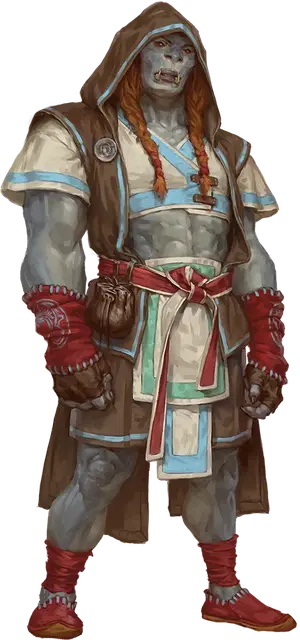

Проводник Совершенного ордена
Transcendent Order Conduit
Маленький или Средний Гуманоид

Класс Доспеха 18 (защита без доспехов)
Хиты 97 (15к8 + 30)
Скорость 50 футов
| мод | спас | ||
|---|---|---|---|
| СИЛ | 10 | +0 | +0 |
| ЛОВ | 19 | +4 | +4 |
| ТЕЛ | 14 | +2 | +2 |
| мод | спас | ||
|---|---|---|---|
| ИНТ | 10 | +0 | +0 |
| МДР | 18 | +4 | +7 |
| ХАР | 12 | +1 | +4 |
Навыки Акробатика +7, Восприятие +7, Выступление +4
Чувства пассивное Восприятие 17
Языки Общий плюс один язык
Опасность 8 (3900 опыта)
Бонус мастерства +3
Особенности
Инстинктивные рефлексы. Проводник с преимуществом совершает броски инициативы, и он не может иметь помеху на броски атаки.
Защита без доспехов. Пока проводник не носит ни доспехи, ни щит, к КД прибавляется его модификатор Мудрости.
Действия
Мультиатака. Проводник совершает три Безоружных удара.
Безоружный удар. . Рукопашная атака оружием: +7 к попаданию, досягаемость 5 футов, одна цель. Попадание: 11 (2к6 + 4) дробящего урона. Один раз в ход, проводник может выбрать один из следующих дополнительных эффектов (выберите один или бросьте к4):
• 1–2: Выведение из строя. Цель должна преуспеть в спасброске Телосложения Сл 15, иначе станет недееспособной до конца следующего хода проводника.
• 3–4: Толчок. Цель отбрасывается от проводника на расстояние до 10 футов по горизонтали.
Реакции
Проводник может совершать до трёх реакций в раунд, но только одну в ход.
Отражение снарядов. В ответ на попадание по нему атакой дальнобойным оружием, проводник отражает снаряд. Урон от этой атаки уменьшается на 1к10.
Не здесь. Когда проводник должен совершить спасбросок, он может переместиться на половину своей скорости, не провоцируя атак. Если его новое положение выводит его за пределы досягаемости или иным образом делает невозможным попадание под действие эффекта, проводник полностью избегает эффекта.
Описание
Члены Совершенного ордена тренируются действовать, не задумываясь, устраняя мысль, стоящую за действием. Проводники двигаются в соответствии с ритмом мультивселенной. Их острые рефлексы граничат с предвидением, позволяя им неосознанно действовать раньше своих врагов.